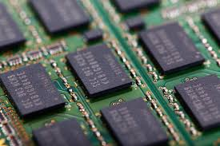

Ed Electronic
Ed Electronic
Ed Electronic
Ed Electronic
Processor
A mobile processor is the central component that powers smartphones and tablets, handling tasks such as app execution, multitasking, and power management. These processors, also known as System-on-Chips (SoCs), integrate multiple functions, including the CPU, GPU, AI engine, and connectivity modules like 5G and Wi-Fi. Popular mobile processor manufacturers include Qualcomm (Snapdragon), Apple (A-series), MediaTek (Dimensity, Helio), Samsung (Exynos), and Google (Tensor). Performance varies based on factors like clock speed, core architecture, fabrication process (measured in nanometers), and power efficiency, impacting overall speed, battery life, and thermal management.
|
|
|---|---|
|  |
RAM
Mobile RAM (Random Access Memory) is a crucial component in smartphones and tablets that temporarily stores data for active applications and system processes. It allows the device to run multiple apps smoothly, enabling efficient multitasking and faster performance. Mobile RAM is typically based on LPDDR (Low Power Double Data Rate) technology, with newer versions like LPDDR5 and LPDDR5X offering increased speed, better power efficiency, and improved bandwidth compared to older LPDDR4X. The amount of RAM in a smartphone varies, ranging from 4GB in budget devices to 16GB or more in flagship models, ensuring smooth operation for tasks like gaming, video editing, and AI-driven applications.
|
Storage
A tablet operating system (OS) is the software platform that manages a tablet’s hardware and software, providing a user-friendly interface and essential functionalities. The most common tablet OS options are Android, iOS (iPadOS), and Windows, each offering distinct features. Android, developed by Google, is widely used in various tablets from brands like Samsung, Lenovo, and Huawei, providing customization and access to the Google Play Store. iPadOS, Apple’s specialized OS for iPads, offers a smooth, optimized experience with features like Split View and Apple Pencil support. Windows tablets, such as Microsoft Surface devices, run a full desktop OS, making them ideal for productivity and professional use.
|
|
Operating SystemA tablet operating system (OS) is the software platform that manages a tablet’s hardware and software, providing a user-friendly interface and essential functionalities. The most common tablet OS options are Android, iOS (iPadOS), and Windows, each offering distinct features. Android, developed by Google, is widely used in various tablets from brands like Samsung, Lenovo, and Huawei, providing customization and access to the Google Play Store. iPadOS, Apple’s specialized OS for iPads, offers a smooth, optimized experience with features like Split View and Apple Pencil support. Windows tablets, such as Microsoft Surface devices, run a full desktop OS, making them ideal for productivity and professional use.
|
|
Display
A tablet display is a large, touch-sensitive screen that serves as both the input and output interface for the device. These displays typically use LCD or OLED technology, offering vibrant colors, sharp resolution, and smooth responsiveness. High-end tablets feature high refresh rates and HDR support for an enhanced viewing experience, making them ideal for gaming, media consumption, and productivity tasks. Screen sizes range from compact 7-inch models to larger 14-inch options, catering to different user needs.
|
|
Battery
A phone battery is a rechargeable energy source that powers mobile devices, typically using lithium-ion or lithium-polymer technology. These batteries are designed to provide a balance between capacity, lifespan, and size, ensuring that smartphones remain lightweight and efficient. Over time, battery performance degrades due to charge cycles, temperature fluctuations, and usage patterns, leading to reduced battery life. Manufacturers implement features like fast charging, battery optimization, and power-saving modes to extend usability.
|